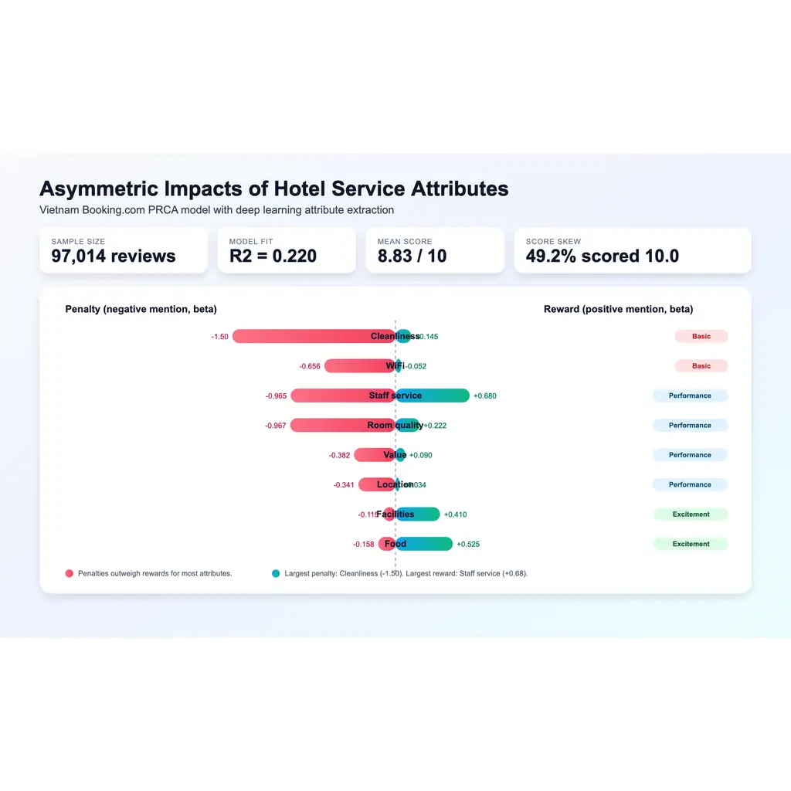

Focus area
Hospitality Analytics Projects
This cluster brings together the hospitality work in the portfolio: hotel customer segmentation, attribute asymmetry, and value frameworks. This page groups market research, consumer insights, and applied analytics work for hospitality teams that require more than high-level ratings.
Last updated 21 Apr 2026
Service quality
Hotel reviews
Segmentation
Value framing
Analytical focus
Operationally useful patterns
The hospitality pages focus on differences rather than averages. They show where guest expectations separate, where hotel attributes behave asymmetrically, and how review text can inform action.
Projects
Hospitality work in the portfolio archive
These pages provide the datasets, visuals, and method detail behind this topic cluster.
Hospitality
Hotel Customer Segmentation from Aspect-Level Sentiment
Maps 10 hotel guest segments from Booking.com reviews in Da Nang for more precise service action.
ABSAK-meansGMM

HospitalityHotel Attribute Asymmetry in Vietnam
Shows which attributes generate bigger penalties, rewards, or baseline expectations in hotel reviews.
Sentence-BERTPRCAKano
 Hospitality
Hospitality
Hotel Value Segmentation Framework
Translates text signals into functional, emotional, and social value actions for service teams.
Value mappingFramework design